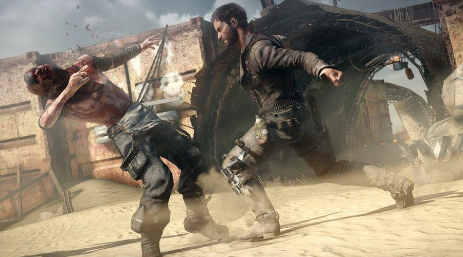
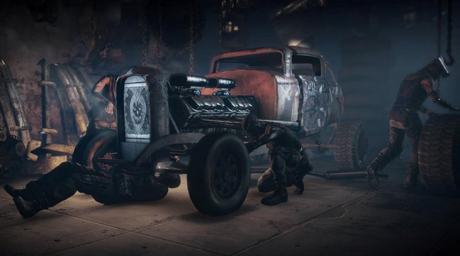

“Play as Mad Max, a lone warrior who must embark on a dangerous journey after his Interceptor is stolen by a gang of marauders. A reluctant hero with an instinct for survival, Max wants nothing more than to leave the madness behind and find solace in the storied ‘Plains of Silence’”.
Thus reads the official teaser on the Avalanche Studios’ web site. Sounds good to us, especially considering that Avalanche Studios has an impressive track of successful open world action games behind them. These include the widely acclaimed Just Cause 2, with its 400 square miles of sandbox to play in, probably the largest open world game to date.
There is not much known about this highly-anticipated game, than that it will be post-apocalyptic open world action game with melee as well as vehicular combat elements.
Mad Max will find himself braving the desolated lands of the post-apocalyptic world, where he must fight for his life as well as for scarce resources with mostly unwelcoming inhabitants of small outposts and ramshackle settlements scattered across the wasteland.
Following the incident where the gang of marauders steal Max’s iconic Interceptor car and leave him in the wilderness for dead, Max sets off on a long and perilous quest to scavenge the bleak and barren world of tomorrow for spare parts so that he can build even better vehicle, which he calls, naturally, Magnum Opus.
In confrontations with the marauders, Max can use a shotgun and a sniper rifle, as well as a thunderstick (a formidable, grenade-on-a-pole-like weapon) but this is, after all, a post-apocalyptic world, where nobody manufactures ammunition anymore, so the bullets are rather scarce and Max must make every one of them count. The melee fight, therefore, is attack of choice, and man-on-man combat will feature heavily.
When in vehicular fight mode, Chumbucket - Max’s trustworthy sidekick, can use a harpoon gun to attack enemy vehicles, tear down the barriers on marauders’ outposts as well as pull other survivors to safety.
The game will feature a crafting system which can be used to craft new tools and weapons to add to Max’s arsenal. Between the fights, Max can drop by the garage to change and modify his car’s chassis, engine and wheels, as well as get new classy paintwork for his vehicle.
As with any well-known franchise, there is so much which can go wrong when doing a game adaptation. But if anyone can pull this off without destroying the legacy of the Mad Max films and alienating legions of Mad Max’s fans in the process, it is Avalanche Studios.

The proof that Avalanche Studios listen to the people who will be ultimately playing the game is the fact that when the American-accent-voiced titular character on the E3 2013 presentation caused an absolute outcry in the gaming community, Avalanche Studios listened and Mad Max is now again Aussie. Phew, that's a massive relief then!
Mad Max will be released at beginning of September 2015 in versions for Microsoft Windows, PlayStation 4 and Xbox One.
Below are some promotional screenshots released by Avalanche Studios earlier:
{kind=link}
{kind=link}
{kind=link}
{kind=link}
{kind=link}